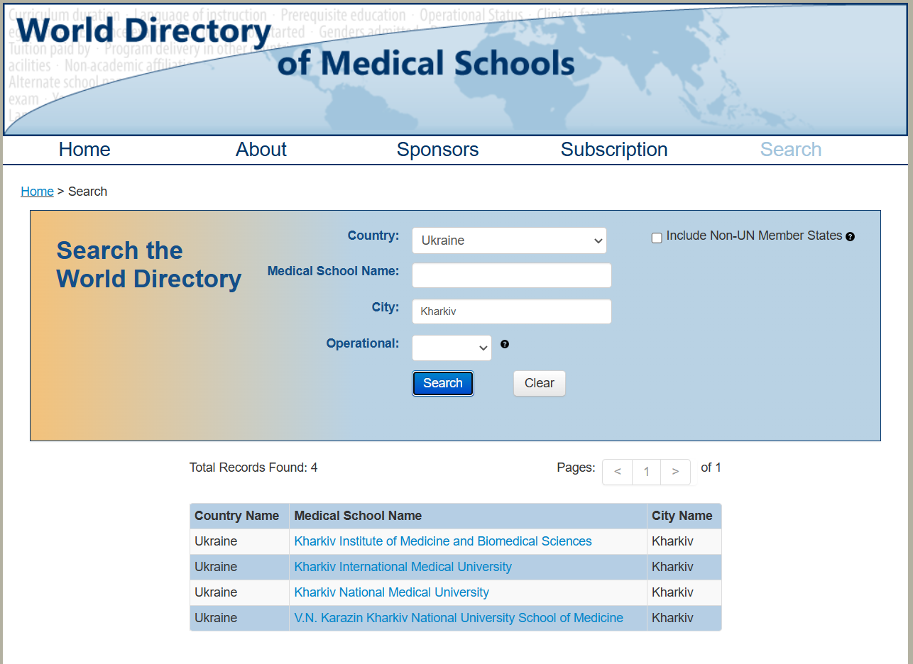
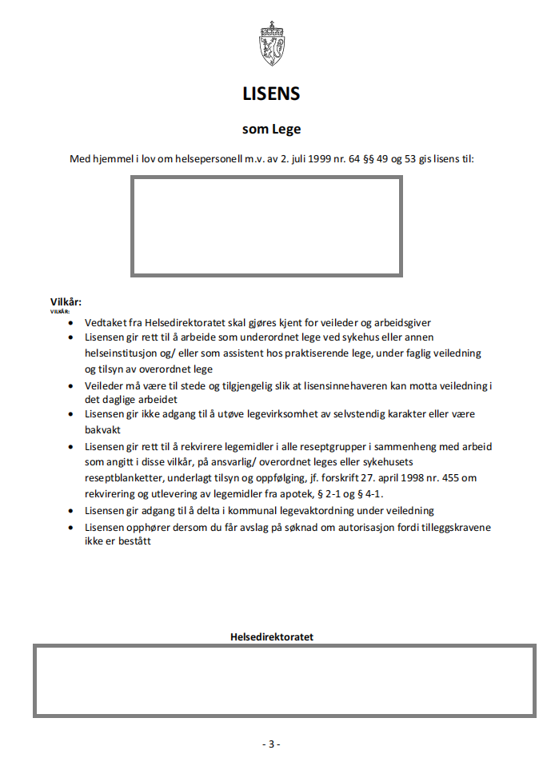
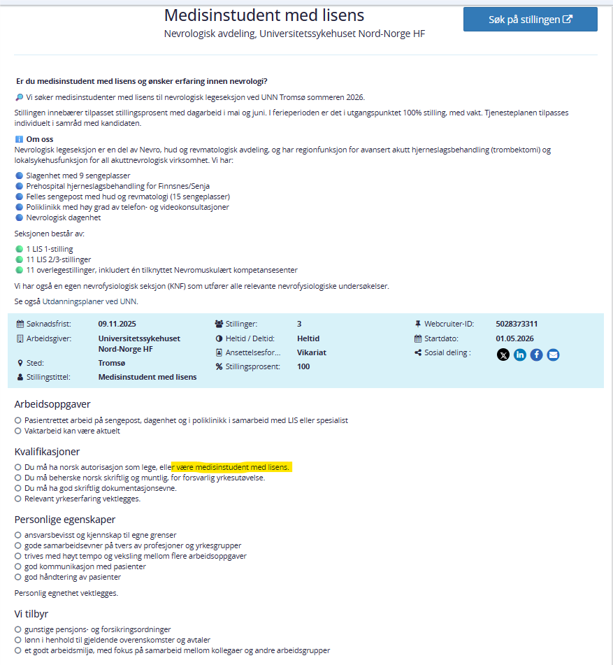
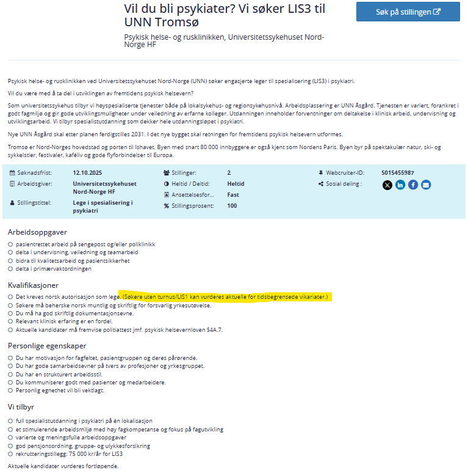

-
ENG

- UA
Article added: 01 Oct 2024
Last edited: 09 Dec 2025
Lindøy, Norge - Sep 2023
The Norwegian Ministry of Health handles the verification of your medical education.
The first step is to make sure that the medical university you graduated from is recognized by the World Directory of Medical Schools.

If everything is OK, then the next step is to submit documents to the American company ECFMG EPIC. They send a request to your university to confirm that you really studied there. After the answer, they send a report to the Helsedirektoratet. This takes about 2 months.
At the same time as EPIC evaluate your documents, you can also send documents to the Helsedirektoratet. Because there the waiting time is up to 13 months.
Once your education is approved, you will receive a license that allows you to work under the supervision of another doctor (or is you don’t have enough hours in certain subjects, they might ask you to take practical part in the hospital). The license is valid for 3 years. During this time, you must meet 3 requirements:
The license looks like this:

Once you meet all 3 requirements, you gain the right to begin LIS1 (Lege i spesialisering). This is similar to an residency in US. It is paid and lasts 18 months: 12 months in a sykehus (large hospital) and 6 months in a legekontor (general practitioner’s office).
Fulfilling all three requirements expands your job opportunities, as you then receive authorization valid until you turn 80 and can now work with vikarbyrå as a legevikar.
Any internship or specialization you completed in your country (if not in EU) does not matter, as it is not recognized in Norway. However, it is possible to confirm your work experience — for this, you need to contact the HR or lønn-avdeling at your workplace to clarify the details. Confirming work experience is needed to increase your salary — the more years of experience you have, the higher your salary.
After receiving your temporary license, you are eligible to switch to a specialist visa. For this, you need a work contract with at least an 80% position. The contract must be for a doctors position — you cannot receive a work visa with a assistent/hjelpepleier contract. The application is submitted through UDI, with the work contract and temporary license attached. Processing time is up to 3 months.
When you submit a søknad (job application), it is important to have at least 2 references, and one of them should be from an enhetsleder. References are people who can describe you as a person, your skills, and work tasks you performed. To obtain these, doctors who are NOT from the EU usually complete hospitering before sending job applications.
You attend a department for a certain period (from several months to a year) and learn how the Norwegian healthcare system works. When searching for a hospitering placement, you should write to the enhetsleder asking about the possibility of doing hospitering there. During hospitering you have the right to stay in hospital-provided housing. After completion, ask the enhetsleder and the doctor you worked with for permission for future employers to contact them about you.
The first job most doctors from outside the EU/EEA start with in Norway is lege før turnus, lege med lisens, or LIS2/3.
The most realistic options for obtaining a contract with a 3-year license and later switching to a work visa:
Examples of job postings you can apply for with a temporary license:


To further increase your chances of getting an LIS1 position, you need experience working in a sykehus in an LIS2/3 role. A temporary license gives you the right to work at the level of a 2nd–3rd year specialist doctor. Later, hospital experience in various departments is very important when applying for LIS1.
It is also important to know that you can apply for LIS1, but keep in mind that before beginning practice in a legekontor, you must have authorization (complete the 3 requirements from Helsedirektoratet).
A free mutual support group for doctors (w/ eduacation outside of EU) in Norway https://t.me/+J1GaqOypn3E2ODUy
Useful links: